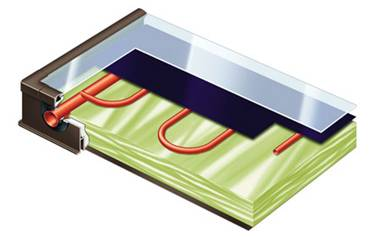
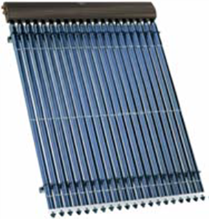
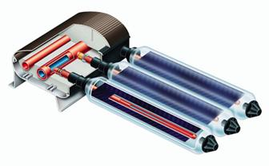

Виды солнечных коллекторов

Как уже известно, главным составляющим элементом каждой солнечной системы является солнечный коллектор. Какие же типы солнечных коллекторов бывают? Какие их отличительные особенности и различия? Как характеристики солнечного коллектора определенного типа влияют на его применение для той или иной цели?
На сегодняшний день наибольшего признания и распространения приобрели коллекторы двух типов:
1. Плоские коллекторы.
2. Вакуумированные трубчатые коллекторы.
Солнечный коллектор должен быть высококачественным изделием со сроком эксплуатации до 20 лет.

Плоский коллектор – это коллектор в форме панели. Пластина поглотителя размещена в средине панели и выполнена в большинстве случаев из меди или алюминия, как металлов, хорошо проводящих и передающих тепло. На поглотитель нанесено специальное покрытие с низким коэффициентом излучения в зоне теплового излучения, что обеспечивает максимальное преобразование солнечного излучения в тепловую энергию и ее минимальные потери в окружающую среду. Сверху поглотитель (абсорбер) защищен специальным гелиостеклом с низким содержанием железа, что обеспечивает большую пропускную способность стекла, незначительное отражение света и защиту от внешних воздействий на протяжении всего периода эксплуатации. По контуру для защиты абсорбера от механических повреждений и предотвращения потерь теплоты размещен корпус из алюминия или высококачественной листовой стали с теплоизоляцией. Под абсорбером и трубками с теплоносителем также размещен слой теплоизоляции.
В плоском коллекторе тепло предается теплоносителю, который циркулирует через солнечный коллектор – воде или антифризу.
Плоские коллекторы могут монтироваться на плоских и скатных крышах, фасадах зданий и даже просто в произвольном месте, то есть во всех положениях от горизонтального до вертикального.
Плоские коллекторы изготавливаются в виде стандартных панелей площадью 2 – 2,5 м2. Необходимая мощность коллектора обеспечивается подключением необходимого числа панелей в одно коллекторное поле или же несколько полей, объединенных в единую солнечную систему.
Это самый распространенный на сегодняшний день вид солнечного коллектора. Используется в бытовых системах подогрева воды, а также отопительных системах.
Плоские коллекторы несколько дешевле вакуумированных трубчатых, но их коэффициент полезного действия при низких температурах окружающей среды также ниже, чем у вакуумированных трубчатых. Если при температурах летнего периода они ничем не уступают вакуумированным трубчатым, то в наиболее холодный период зимы они могут уступать по эффективности в два раза.

Вакуумированный трубчатый коллектор – коллектор, который состоит из отдельных трубок, каждую из которых можно рассматривать как небольшой солнечный коллектор. Трубки объединены в верхней части и формируют одну панель. Конструктивно вакуумированный трубчатый коллектор похож на термос: трубка меньшего диаметра вставлена в трубку большего диаметра, а из пространства между ними для создания вакуума откачан воздух. Трубка большего диаметра выполняет защитную функцию и выполнена из специального гелиостекла, как у плоских коллекторов. В нее встроена медная или алюминиевая пластина поглотителя, который обеспечивает максимальный уровень поглощения солнечной энергии и незначительное тепловое излучение. Под поглотителем размещена трубка поглотителя, в которой циркулирует теплоноситель, который отбирает теплоту от поглотителя. Поскольку между трубками находится вакуум, который является сам по себе отличным теплоизолятором, теплопотери вакуумированных трубчатых коллекторов в 2 – 2,5 раза меньше, чем у плоских коллекторов. По сравнению с плоскими коллекторами в эксплуатации они имеют значительное преимущество при низких температурах наружного воздуха: их коэффициент полезного действия оказывается значительно выше. Для вакуумированных трубчатых коллекторов очень важным является сохранение вакуума на протяжении всего периода эксплуатации.
Вакуумированные трубчатые коллекторы конструктивно бывают двух подвидов: прямоточные и с тепловой трубой.

В прямоточных вакуумированных трубчатых коллекторах трубка поглотителя – это коаксиальный теплообменник (также типа «труба в трубе»). Теплоноситель (вода, антифриз) из коллектора движется по внутренней трубе до конца трубы, а потом попадает в межтрубное пространство и, отбирая теплоту от поглотителя, возвращается назад в коллектор. Коллектор в данном случае – две трубы, одна из которых подача, а другая обратка, к которым подключаются трубки коллектора. Преимуществом данного типа солнечных коллекторов является непосредственная передача тепла воде (что сокращает теплопотери), а также возможность монтировать коллектор в любом положении от горизонтального до вертикального, с расположением трубок вдоль или же в поперек, поскольку теплоноситель циркулирует непосредственно в трубке поглотителя.Преимуществами вакуумированных трубчатых коллекторов с тепловой трубой является сохранение высокой эффективности до температуры -30°С С (для коллектора со стеклянной тепловой трубкой) и даже до -45°С (для коллектора с металлической тепловой трубкой) при солнечной погоде, возможность замены отдельных трубок в случае поломки, а также возможность поворачивать трубки вокруг своей оси для выбора наиболее оптимального угла по отношению к солнцу и обеспечение, таким образом, использования солнечной энергии с максимальной эффективностью, что стало возможным благодаря «сухому» соединению тепловой трубки с основным контуром теплоносителя.
В таблице ниже представлены технические характеристики вакуумных трубок для коллектора различной длины компании NARVA в стандартном исполнении. Один коллектор может состоять из 5, 10, 20 или 30 трубок.
|
Покрытие абсорбера: одностороннее (Standard) |
Вакуумная трубка NARVA с тепловой трубой |
|||
|
Номинальная длина, мм |
800 |
1500 |
1750 |
2000 |
|
Длина трубки, мм |
800 |
1510 |
1785 |
2010 |
|
Диаметр стеклянной трубки, мм |
56 |
|||
|
Длина соединительной трубки, мм |
30,5 |
|||
|
Поверхность апертуры стеклянной трубки, м2 |
0,0386 |
0,0750 |
0,090 |
0,1010 |
|
Номинальная мощность трубки, Вт, при облучении 1000 Вт/м2 |
28 |
56 |
67 |
76 |
|
Накопленное тепло при 1000 кВт?ч/год?м2 и разности температур 40 К, кВт?ч/год |
25 |
50 |
60 |
68 |
|
Накопленное тепло при 1000 кВт?ч/год?м2 и разности температур 100 К, кВт?ч/год |
21 |
42 |
50 |
57 |
|
Линейный коэффициент теплопередачи, кВт/м2?К |
1,12 |
|||
|
Квадратный коэффициент теплопередачи, кВт/м2?К2 |
0,004 |
|||
|
КПД |
0,75 |
|||
Вакуумированные трубчатые коллекторы также могут монтироваться на плоских и скатных крышах, фасадах зданий и даже просто в произвольном месте. Для обеспечения необходимого угла наклона может использоваться специальная опорная конструкция.
Вакуумированные трубчатые коллекторы могут поставляться в виде панелей с различной длиной и количеством трубок. Необходимая мощность коллектора обеспечивается подключением необходимого числа панелей в одно коллекторное поле или же в несколько полей, объединенных в единую солнечную систему.
Вакуумированные трубчатые коллекторы дороже плоских коллекторов, поскольку являются более сложным типом солнечных коллекторов и обладают рядом преимуществ.
Компания Альтер Эйр предлагает оборудование производителей, качество которого уже нашло признание как на международном рынке, так и в Украине.